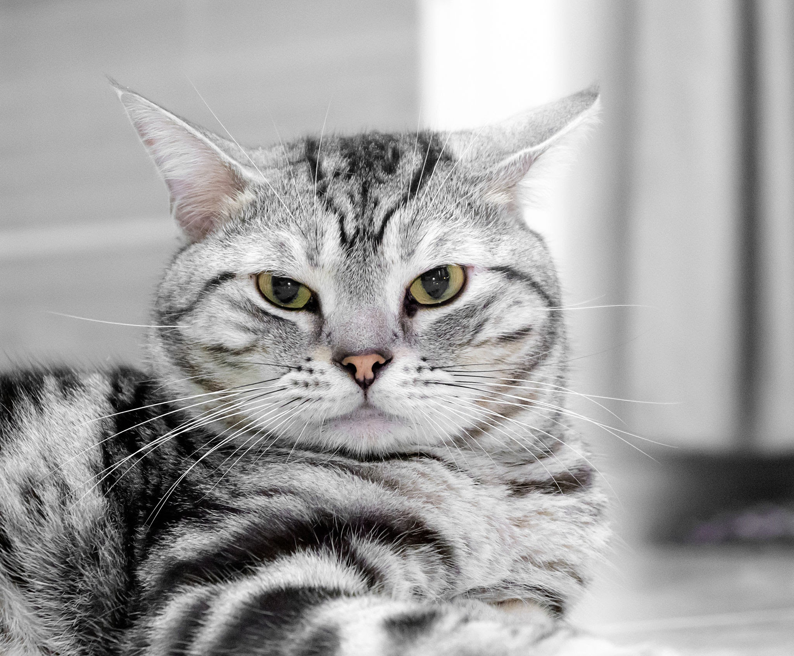

Eigenschappen
- Andere naam: domestic shorthair
- Gewicht: 4.5-6.8kg
- Karakter: vriendelijk, speels en accepterend van andere huisdieren en mensen, inclusief senioren en kinderen
- Kleuren: grijs-wit-zwart
- ongeveer levensduur: 15-20 jaren

terug naar rassen